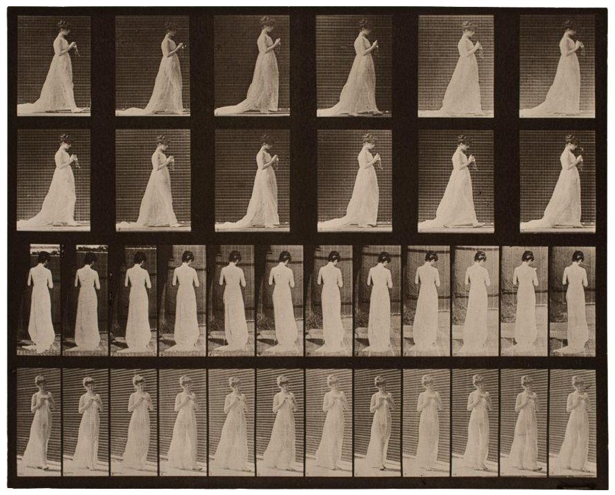

Eadweard Muybridge loved looking at things in motion:


He animated these with a phenakistiscope, hover over and see it in action:
Phenakistiscopes are amazing and you can see some beautiful ones here, but my favorite photographs Muybridge took of a woman walking while she knits:
